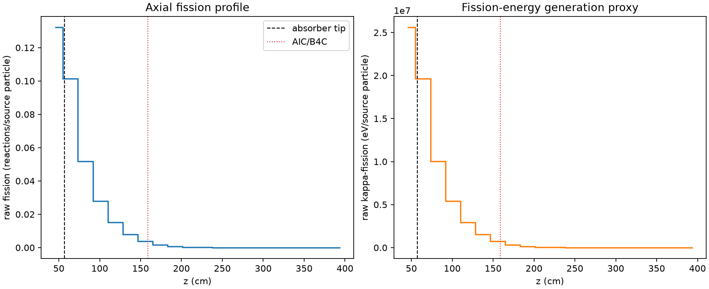
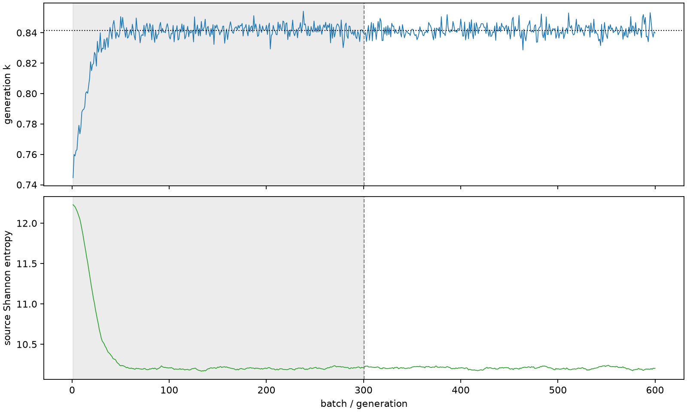

| field | value |
|---|---|
| experiment | V2-ADAPTIVE_01-0007 |
| k | 0.8414415018702838 |
| MC standard error | 0.0001707297102638364 |
| seconds | 956.4414754169993 |
| acceptance | not_assessed |
| convergence | review_required |
Completed is output integrity only; physical and statistical review required. Zero tallies do not prove zero production or zero uncertainty.
| diagnostic | value |
|---|---|
| geometric fuel voxels | 5280 |
| zero fission tally voxels | 574 |
| low signal fuel voxels | 2248 |
| low signal fission share | 0.00015750544998590797 |
| low signal kappa share | 0.0001575474802404265 |
| important fission share | 0.9500802106907082 |
| previous filter included | 3032 |
| duration estimate s | 1562.5173488400023 |
| actual minus estimate s | -606.075873423003 |
| fission relative MC error | statistics |
|---|---|
| all_geometric_fuel | {"voxels": 5280, "positive_mean_voxels": 4706, "zero_mean_voxels": 574, "undefined_relative_error_voxels": 574, "median": 0.06285072558636087, "p95": 1.0, "maximum": 1.0000000000000002} |
| low_signal | {"voxels": 2248, "positive_mean_voxels": 1674, "zero_mean_voxels": 574, "undefined_relative_error_voxels": 574, "median": 0.6997607006354278, "p95": 1.0, "maximum": 1.0000000000000002} |
| important_95pct | {"voxels": 1266, "positive_mean_voxels": 1266, "zero_mean_voxels": 0, "undefined_relative_error_voxels": 0, "median": 0.0065450931435116905, "p95": 0.012444097339017109, "maximum": 0.013634118356426693} |
| outside_previous_filter | {"voxels": 2248, "positive_mean_voxels": 1674, "zero_mean_voxels": 574, "undefined_relative_error_voxels": 574, "median": 0.6997607006354278, "p95": 1.0, "maximum": 1.0000000000000002} |
| kappa_fission relative MC error | statistics |
|---|---|
| all_geometric_fuel | {"voxels": 5280, "positive_mean_voxels": 4706, "zero_mean_voxels": 574, "undefined_relative_error_voxels": 574, "median": 0.06273858402625279, "p95": 1.0, "maximum": 1.0000000000000002} |
| low_signal | {"voxels": 2248, "positive_mean_voxels": 1674, "zero_mean_voxels": 574, "undefined_relative_error_voxels": 574, "median": 0.700462325790524, "p95": 1.0, "maximum": 1.0000000000000002} |
| important_95pct | {"voxels": 1266, "positive_mean_voxels": 1266, "zero_mean_voxels": 0, "undefined_relative_error_voxels": 0, "median": 0.006534503812454904, "p95": 0.012424813012719513, "maximum": 0.013613680610111426} |
| outside_previous_filter | {"voxels": 2248, "positive_mean_voxels": 1674, "zero_mean_voxels": 574, "undefined_relative_error_voxels": 574, "median": 0.700462325790524, "p95": 1.0, "maximum": 1.0000000000000002} |
| axial bin | fission share | kappa-fission share |
|---|---|---|
| 1 | 0.3856184164423127 | 0.385551318789012 |
| 2 | 0.2957564552665631 | 0.2957768089983427 |
| 3 | 0.15086702079154188 | 0.150888486387274 |
| 4 | 0.0814633245132395 | 0.08147496127208698 |
| 5 | 0.04389152881647612 | 0.043897723447851894 |
| 6 | 0.023213832542219082 | 0.023217290118668264 |
| 7 | 0.011272912310077883 | 0.011274845633068227 |
| 8 | 0.004593270474905489 | 0.004594451894524042 |
| 9 | 0.0019646078158158053 | 0.001965098512976898 |
| 10 | 0.0007988806618438437 | 0.0007991165683419989 |
| 11 | 0.0003307320363259497 | 0.0003308193632819933 |
| 12 | 0.00014548655998300342 | 0.00014552087953086587 |
| 13 | 5.577439586026002e-05 | 5.579663172262952e-05 |
| 14 | 1.667052371844748e-05 | 1.6675794546098862e-05 |
| 15 | 6.596235901773201e-06 | 6.595260461844665e-06 |
| 16 | 1.4301086324973354e-06 | 1.4305634130357501e-06 |
| 17 | 8.184315409693879e-07 | 8.183001959297987e-07 |
| 18 | 1.1706229483664532e-07 | 1.1722613222585606e-07 |
| 19 | 1.321554642174641e-06 | 1.3207718273268972e-06 |
| 20 | 8.034561045542106e-07 | 8.035867410380473e-07 |
Histories include the inactive-to-active transition at batch 300. kappa-fission approximates fission energy production, not total heat deposition.

